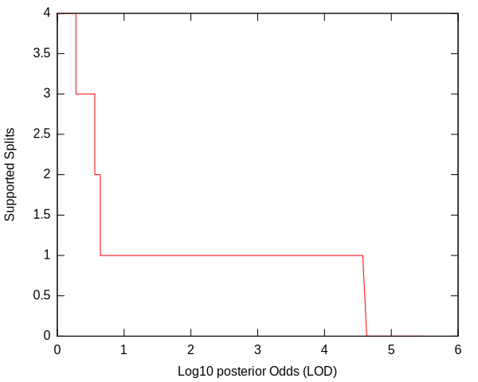
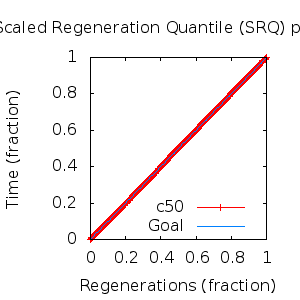
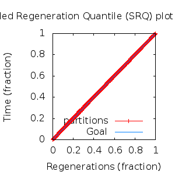

MCMC Post-hoc Analysis: 8 sequences
Data & Model
| Partition | Sequences | Lengths | Alphabet | Substitution Model | Indel Model | Scale Model |
|---|
| 1 |
E5_alpha1_aa.fas |
71 - 78 |
Amino-Acids | S1 = lg08+f |
I1 = rs07 |
scale1 ~ gamma[0.5,2] |
Scalar variables
| Statistic | Median | 95% BCI | ACT | ESS | burnin | PSRF-CI80% | PSRF-RCF |
|---|
| prior |
-45.03 |
(-59.89, -31.82) |
34.63 |
7796 |
415
|
1 | 1.003
|
| prior_A1 |
-34.22 |
(-42.98, -31.81) |
1.594 |
169359 |
129
|
1 | 0.9984
|
| likelihood |
-841.9 |
(-851, -833.9) |
4.799 |
56264 |
163
|
1.001 | 1
|
| posterior |
-887.3 |
(-903.4, -872.8) |
31.01 |
8705 |
422
|
1 | 1
|
| Heat.beta |
1 |
| | | | | |
| Scale[1] |
2.074 |
(0.8933, 3.979) |
1.029 |
262286 |
153
|
1 | 1.002
|
| f:pi[A] |
0.06189 |
(0.03363, 0.09463) |
7.415 |
36415 |
413
|
1 | 0.9962
|
| f:pi[R] |
0.02349 |
(0.004913, 0.05083) |
8.893 |
30362 |
461
|
1 | 1
|
| f:pi[N] |
0.02309 |
(0.00405, 0.04877) |
8.831 |
30572 |
346
|
0.9993 | 0.9953
|
| f:pi[D] |
0.02039 |
(0.002377, 0.04811) |
9.051 |
29832 |
377
|
1 | 1
|
| f:pi[C] |
0.06755 |
(0.03739, 0.1032) |
7.59 |
35573 |
349
|
0.9999 | 1.007
|
| f:pi[Q] |
0.02695 |
(0.00568, 0.05488) |
9.129 |
29577 |
466
|
1 | 1.003
|
| f:pi[E] |
0.01865 |
(0.001301, 0.04551) |
10.08 |
26780 |
642
|
0.9997 | 1.002
|
| f:pi[G] |
0.01216 |
(0.0003973, 0.03377) |
9.926 |
27201 |
449
|
1.001 | 1.005
|
| f:pi[H] |
0.04017 |
(0.01607, 0.07009) |
8.005 |
33729 |
461
|
0.9996 | 1.004
|
| f:pi[I] |
0.06974 |
(0.04437, 0.09825) |
7.94 |
34004 |
322
|
1 | 0.9941
|
| f:pi[L] |
0.1523 |
(0.1073, 0.2005) |
7.306 |
36956 |
293
|
1 | 0.9983
|
| f:pi[K] |
0.004773 |
(1.677e-07, 0.02032) |
12.96 |
20837 |
601
|
1.001 | 0.9958
|
| f:pi[M] |
0.03341 |
(0.01624, 0.05383) |
8.088 |
33383 |
661
|
0.9999 | 1.002
|
| f:pi[F] |
0.08246 |
(0.05077, 0.1191) |
7.394 |
36515 |
250
|
1 | 1.003
|
| f:pi[P] |
0.04024 |
(0.01035, 0.07905) |
8.935 |
30218 |
437
|
1 | 0.991
|
| f:pi[S] |
0.062 |
(0.03265, 0.09586) |
7.851 |
34389 |
321
|
1 | 0.999
|
| f:pi[T] |
0.05573 |
(0.02784, 0.08957) |
7.755 |
34818 |
785
|
1 | 1.005
|
| f:pi[W] |
0.01891 |
(0.00383, 0.0405) |
8.621 |
31320 |
289
|
0.9997 | 1.006
|
| f:pi[Y] |
0.04771 |
(0.02444, 0.07539) |
7.733 |
34917 |
376
|
0.9996 | 1.002
|
| f:pi[V] |
0.1069 |
(0.07187, 0.1456) |
7.762 |
34786 |
364
|
1 | 1.003
|
| rs07:mean_length |
6.073 |
(1.697, 16.59) |
2.272 |
118831 |
167
|
0.9999 | 0.9997
|
| rs07:log_rate |
-4.204 |
(-5.106, -3.475) |
1.233 |
218984 |
91
|
0.9996 | 1
|
| |A1| |
80 |
(80, 85) |
1.914 |
141096 |
73 |
0.6667 | 1.001
|
| #indels1 |
4 |
(4, 5) |
1.525 |
177095 |
27 |
0 | 1
|
| |indels1| |
12 |
(11, 21) |
1.764 |
153020 |
87 |
0.8333 | 1.001
|
| #substs1 |
133 |
(128, 137) |
1.783 |
151461 |
101 |
0.8 | 1
|
| Scale1*|T| |
2.168 |
(1.766, 2.595) |
2.012 |
134178 |
148
|
1 | 0.9993
|
| |A| |
80 |
(80, 85) |
1.914 |
141096 |
73 |
0.6667 | 1.001
|
| #indels |
4 |
(4, 5) |
1.525 |
177095 |
27 |
0 | 1
|
| |indels| |
12 |
(11, 21) |
1.764 |
153020 |
87 |
0.8333 | 1.001
|
| #substs |
133 |
(128, 137) |
1.783 |
151461 |
101 |
0.8 | 1
|
| |T| |
1.046 |
(0.4237, 1.856) |
1 |
270003 |
188
|
0.9999 | 1.002
|
Phylogeny Distribution


Alignment Distribution
Partition 1
|
|
|
Diff |
|
Min. %identity |
# Sites |
Constant |
Informative |
| Initial |
FASTA |
HTML |
Diff |
|
5.13% |
78 |
2 (2.56%) |
35 (44.9%) |
| Best (WPD) |
FASTA |
HTML |
|
AU |
45% |
80 |
17 (21.2%) |
34 (42.5%) |
Mixing
Statistics: | scalar burnin | 785 | | scalar ESS | 7797 | | topological ESS | | | ASDSF | NA | | MSDSF | NA | | PSRF CI80% | 1.001 | | PSRF RCF | 1.007 |
|  |
Analysis
directory: /work/awillemsen/bali-phy/AlphaPVs_E5_aa_new
version: 3.3
| chain # | burnin | subsample | Iterations (after burnin) | command line | subdirectory |
|---|
| 1 |
10000 |
1 |
90000 |
bali-phy E5_alpha1_aa.fas -s 83432 -i 100000 -n AlphaPVs_E5_alpha1 |
AlphaPVs_E5_alpha1-1 |
| 2 |
10000 |
1 |
90000 |
bali-phy E5_alpha1_aa.fas -s 23629 -i 100000 -n AlphaPVs_E5_alpha1 |
AlphaPVs_E5_alpha1-2 |
| 3 |
10000 |
1 |
90000 |
bali-phy E5_alpha1_aa.fas -s 45331 -i 100000 -n AlphaPVs_E5_alpha1 |
AlphaPVs_E5_alpha1-3 |
| P(data|M) = -849.748 +- 0.086
|
Complete sample: 224
topologies |
95% Bayesian credible interval: 48 topologies |
Model and priors
Tree (+priors)
| topology | ~ uniform on tree topologies |
| branch lengths | ~ iid[num_branches[T],gamma[0.5,div[2,num_branches[T]]]] |
Substitution model (+priors)
| S1 | = |
lg08+f
| f:pi | ~ | dirichlet_on[letters[@a],1]
|
|
Indel model (+priors)
| I1 | = |
rs07
| rs07:log_rate | ~ | laplace[-4,0.707]
|
| rs07:mean_length | ~ | exponential[10,1]
|
|
Scales (+priors)
{kind=link}
{kind=link}
{kind=link}
{kind=link}
{kind=link}
{kind=link}
{kind=link}
{kind=link}